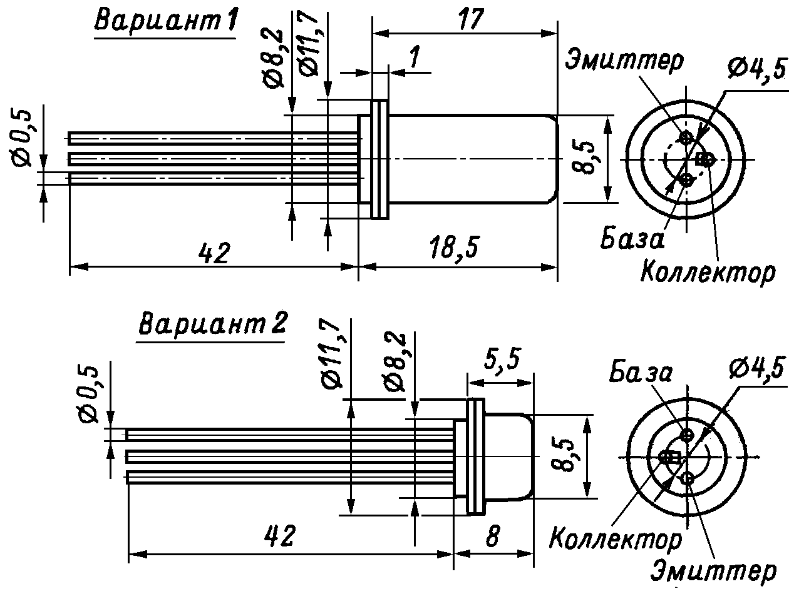

Транзистор ГТ404
Транзисторы ГТ404(А-Е) - германиевые, усилительные, средней мощные низкочастотные, структуры n-p-n (комплементарны ГТ402). Два варианта корпуса. Масса варианта 1 - не более 5 г, варианта 2 - не более 2 г. Маркировка буквенно - цифровая.

Рис. 1 - Размеры и цоколевка транзистора ГТ404
Таблица 1
| Параметр | ГТ404А | ГТ404Б | ГТ404В | ГТ404Г | ГТ404Е |
|---|---|---|---|---|---|
| Постоянная рассеиваемая мощность (Рк т max ): | |||||
| с корпусом по 1-му варианту | 0,6 Вт | ||||
| с корпусом по 2-му варианту | 0,3 Вт | ||||
| Максимальное напряжение коллектор-эмиттер | 25 В | 25 В | 40 В | 40 В | 25 В |
| Максимальный ток коллектора | 0,5 А. | ||||
| Коэффициент передачи тока в схеме ОЭ в режиме насыщения при токе эмиттера 3 мА |
30-80 | 60-150 | 30-80 | 60-150 | 60-150 |
| Граничная частота передачи тока ( fh21э ) | 1МГц | ||||
| Обратный ток коллектор-эмиттер при температуре 20°C |
не более 20 мкА | ||||
Зарубежные аналоги транзисторов ГТ404
- ГТ404А - AC176.
- ГТ404Б - 2SD127A, AC141, AC187.
- ГТ404Г - GD607, AC185.
- ГТ404Е - 2SD127.
Источники:
elektrikaetoprosto.ru - Транзисторы ГТ404А, ГТ404Б, ГТ404В, ГТ404Г, ГТ404Е